Subsistemas de Disco
Tema 5 de 13 Cuarto curso, 1.º cuatrimestre ≈ 10 min de lectura
Temas de ENCO · 5/13
- 1. Formatos de Servidores - Racks y Blades
- 2. Centros de Procesamiento de Datos (CPDs)
- 3. Virtualización de Servidores
- 4. Dispositivos de Almacenamiento
- 5. Subsistemas de Disco
- 6. Fibre Channel y redes SAN
- 7. Almacenamiento IP
- 8. Sistemas de ficheros y almacenamiento en red
- 9. Virtualización del almacenamiento
- 10. Backup
- 11. Backup en red y software para backup
- 12. Archivado de la información
- 13. Hardware para backup
5.1 Qué es un subsistema de disco
Un subsistema de disco (SSdD) es un equipo independiente que agrupa muchos discos detrás de un controlador con caché y unos puertos por los que se conectan los servidores (por SCSI directamente o a través de una red Fibre Channel). Ojo: un servidor de discos no es un servidor de ficheros. El servidor de ficheros comparte ficheros por la LAN; el subsistema de disco ofrece a los servidores discos (bloques), que ellos ven como si fueran discos propios.
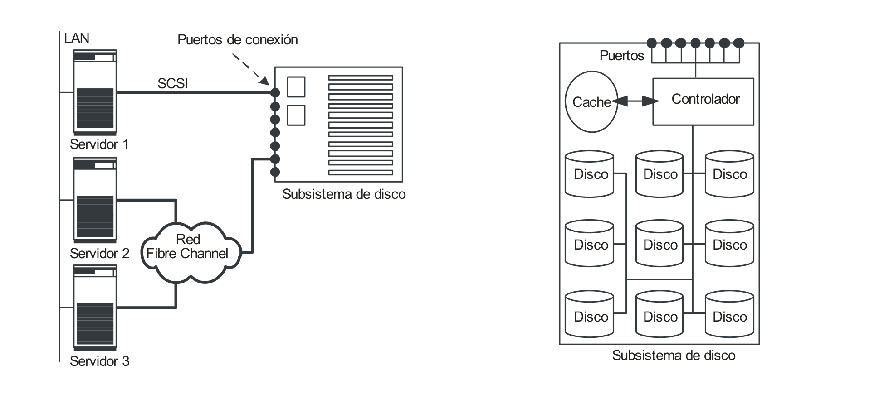
Izquierda: tres servidores conectados a los puertos de un subsistema de disco, por SCSI o por una red Fibre Channel. Derecha: por dentro, puertos, caché, controlador y discos.Los hay de muchos tamaños (número y capacidad de discos), y su funcionamiento es totalmente transparente para los servidores: el controlador les presenta discos lógicos, aplica RAID y virtualiza el almacenamiento, de modo que cada servidor ve "sus" discos sin saber en qué discos físicos están.
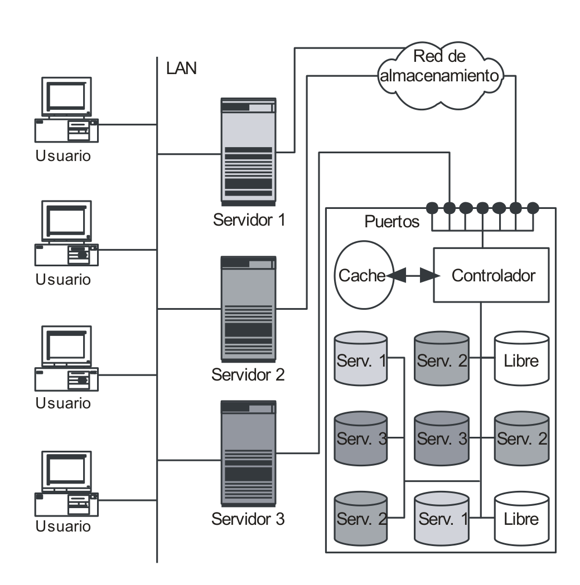
Los usuarios acceden por la LAN a tres servidores, y estos, por una red de almacenamiento, al subsistema, que reparte sus discos entre ellos (Serv. 1, 2, 3) y deja algunos libres.Analogía: el trastero con conserje
Un subsistema de disco es como un edificio de trasteros con un conserje (el controlador). Cada vecino (servidor) tiene "su trastero", pero no sabe en qué sótano está: el conserje lo coloca, hace copias de seguridad y puede moverlo de sitio sin que el vecino lo note.
5.1.1 El tamaño de los discos
Con la misma capacidad total, conviene usar discos grandes: con 16 discos de 18 GB se llenan todas las bahías, mientras que con 8 discos de 36 GB quedan bahías libres para añadir capacidad más adelante. A cambio, menos discos significa menos discos trabajando en paralelo.
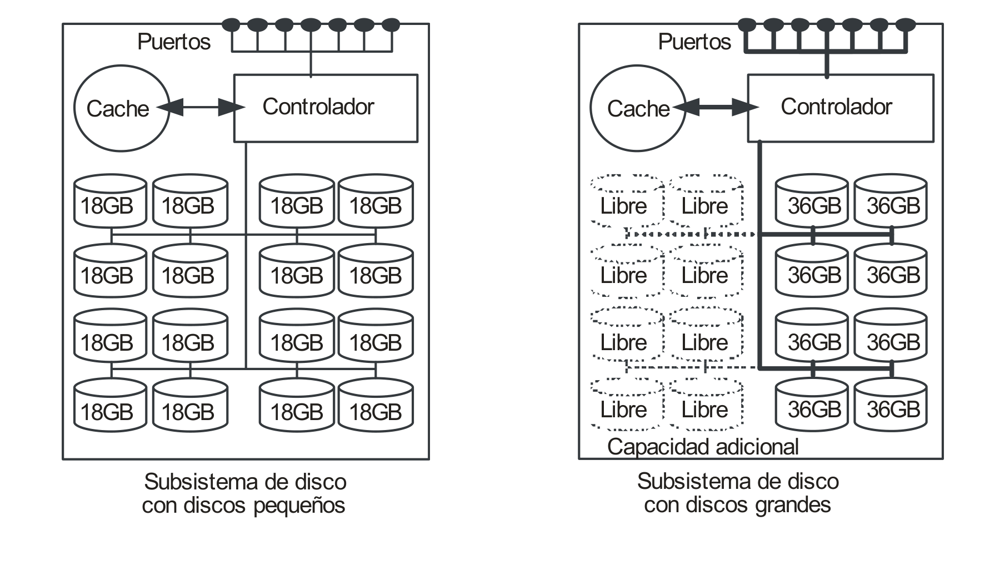
5.1.2 Canales de E/S redundantes
Los canales (buses) de E/S conectan los puertos con el controlador y el controlador con los discos: SCSI, FC, SAS, SATA... y a veces tecnologías propietarias. Para que un fallo de un canal no deje discos inaccesibles, se duplican, con varias configuraciones:
| Configuración | Cómo funciona |
|---|---|
| Activo | Un solo canal hacia cada disco: si falla, el disco queda inaccesible |
| Activo/pasivo | Un canal trabaja y otro espera de reserva; entra solo si falla el primero |
| Activo/activo sin balanceo | Los dos canales trabajan, cada uno con su grupo de discos; si uno falla, el otro asume todo |
| Activo/activo con balanceo | Los dos canales trabajan y reparten la carga entre ellos |
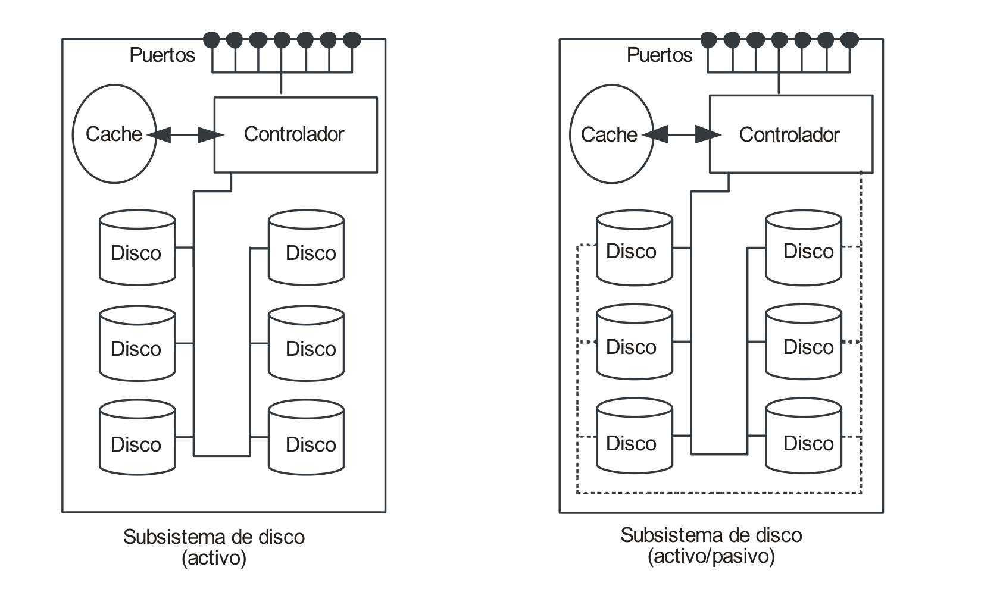
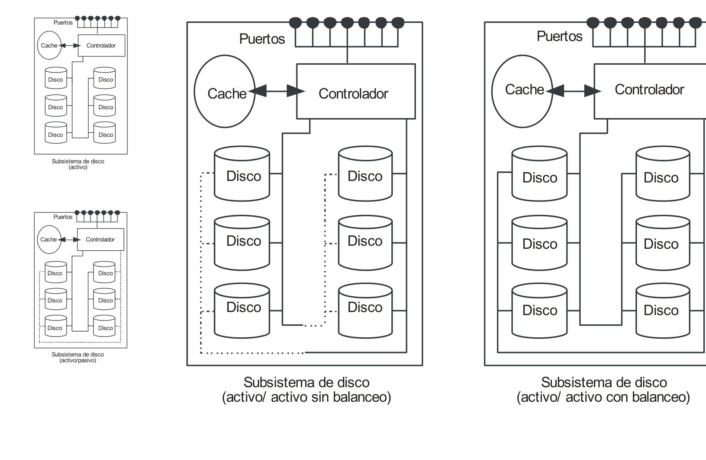
5.1.3 RAID en un subsistema de disco
El controlador del SSdD agrupa los discos en RAID y presenta el resultado a los servidores como discos lógicos. La figura muestra además qué pasa cuando falla un disco: (1) el RAID funciona con un disco libre de reserva (hot spare); (2) falla un disco; (3) el controlador reconstruye sus datos en el disco de reserva a partir de los demás; (4) se sustituye el disco roto, que pasa a ser el nuevo disco libre. Todo ello sin que el servidor deje de funcionar.
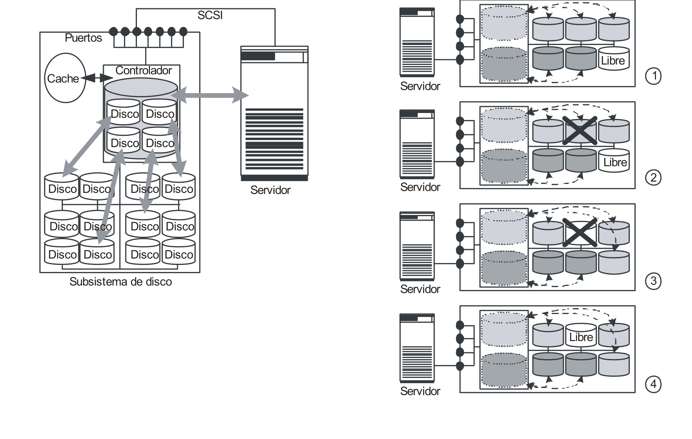
5.2 Subsistemas de disco inteligentes
La evolución ha sido JBOD (sin controlador) → RAID → SSdD inteligentes, que añaden tres funciones:
- Copias instantáneas, para generar datos de prueba, preparar backups o copiar datos para minería de datos.
- Mirroring remoto, para protegerse de catástrofes.
- Enmascarado por LUN, para asignar los discos de forma segura a cada servidor.
5.2.1 Copias instantáneas
Una copia instantánea (snapshot) crea en un momento dado una copia de un disco lógico, que otro servidor puede usar (para backup, pruebas...) mientras el original sigue en marcha.
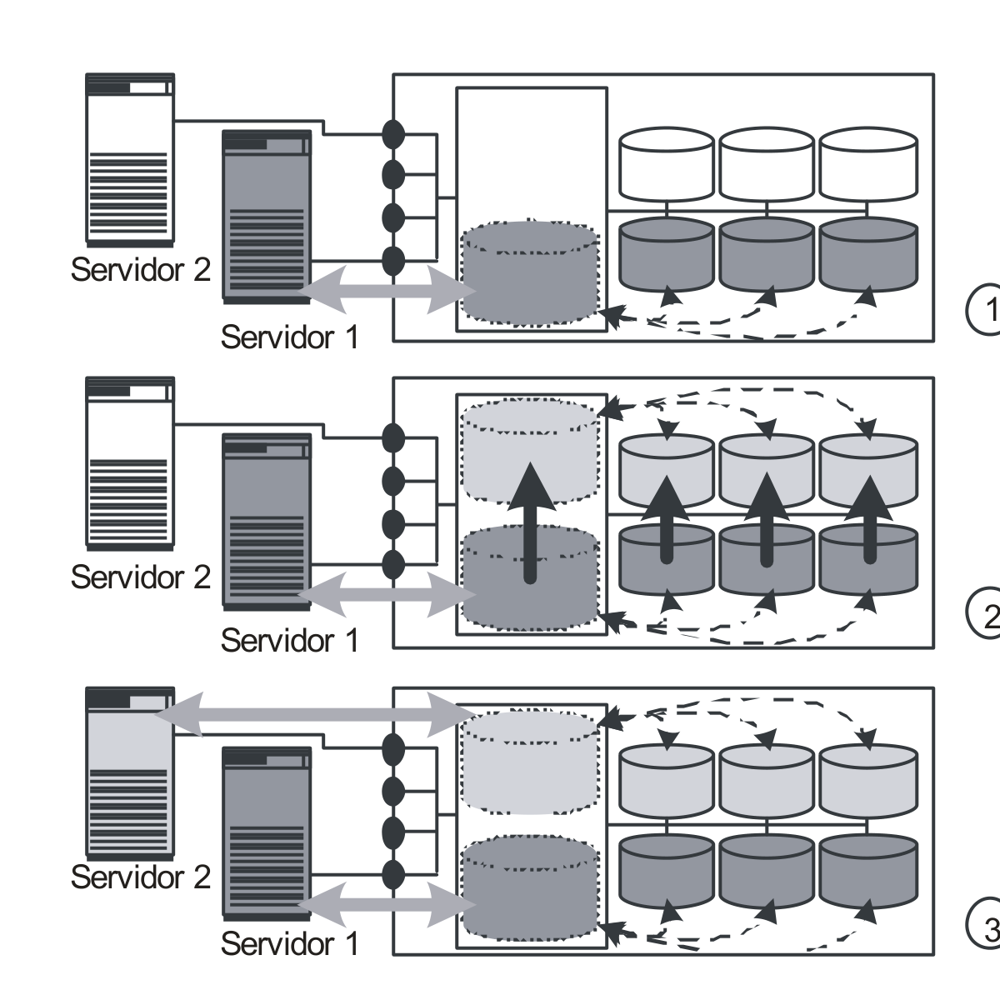
(1) El servidor 1 trabaja con su disco. (2) Se crea la copia y el controlador copia los datos en segundo plano. (3) El servidor 2 usa la copia mientras el servidor 1 sigue con el original.Hay varias formas de implementarlas:
- Detener el subsistema y hacer la copia (la forma naïve): sencillo, pero obliga a parar el servicio.
- Partir de un RAID 1 o RAID 10 y desconectar un disco del espejo, que queda como copia. Problema: mientras está desconectado, los datos pierden su protección.
- Hacer la copia en marcha, de tres formas: copia total (se copian todos los datos), copia parcial (solo se copian los datos que se modifican: los bloques sin cambios se leen del original) o copia incremental (la primera vez, total; después, solo parciales).
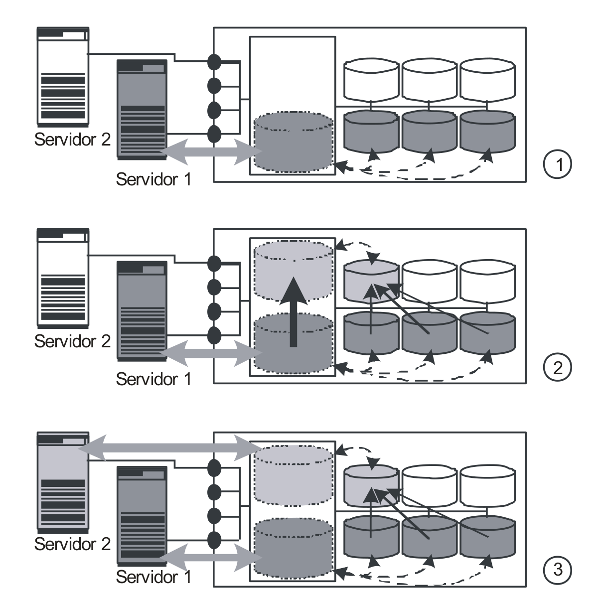
Solo los bloques que cambian en el original se copian antes de modificarse; el resto se comparte.Analogía: la foto del documento compartido
Una copia total es fotocopiar el libro entero. Una copia parcial es fotocopiar solo una página justo antes de que alguien la vaya a tachar: el resto del libro se sigue leyendo del original, porque no ha cambiado.
Las bases de datos son un caso especial, porque sus datos suelen estar repartidos en varios discos que deben copiarse en el mismo instante y en orden: para eso existen los grupos de consistencia (ver más abajo).
5.2.2 Mirroring remoto
Para protegerse de catástrofes (un incendio que destruye el CPD), el subsistema del CPD primario copia continuamente sus datos a otro subsistema en un CPD de reserva, a través de una WAN.
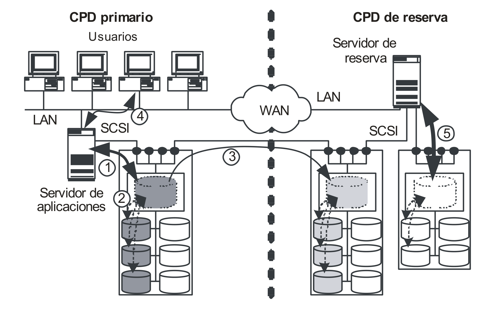
(1) El servidor de aplicaciones escribe en su subsistema; (2) se confirma; (3) el subsistema copia el bloque al CPD de reserva por la WAN; (4) los usuarios trabajan con normalidad; (5) el servidor de reserva puede leer (por ejemplo, de una copia instantánea) en el CPD de reserva.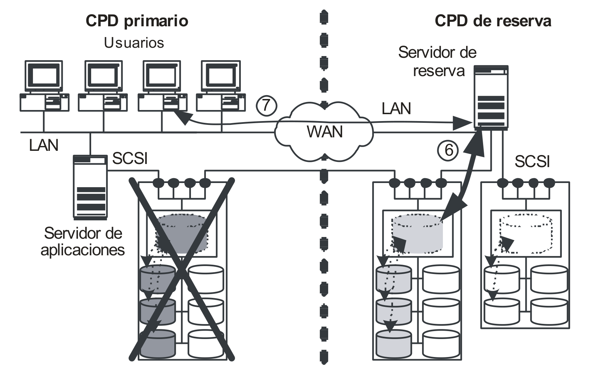
Si el CPD primario se destruye, (6) el servidor de reserva pasa a trabajar con la copia remota y (7) los usuarios se conectan a él.Las copias remotas pueden ser síncronas o asíncronas:
| Síncrona | Asíncrona | |
|---|---|---|
| Cómo funciona | El primer subsistema espera a que el segundo confirme la escritura antes de confirmársela al servidor | El primer subsistema confirma enseguida al servidor y envía el bloque al segundo después |
| Pérdida de datos si cae el CPD | Ninguna: la copia siempre está al día | Se pueden perder las últimas escrituras aún no enviadas |
| Rendimiento | Más lento: cada escritura espera el viaje por la WAN | Más rápido |
| Distancia | Limitada (la latencia crece con la distancia) | Grande |
La figura muestra también una combinación: copia síncrona a un segundo subsistema cercano y, desde este, asíncrona a un tercero lejano, para tener a la vez cero pérdida y protección a gran distancia.
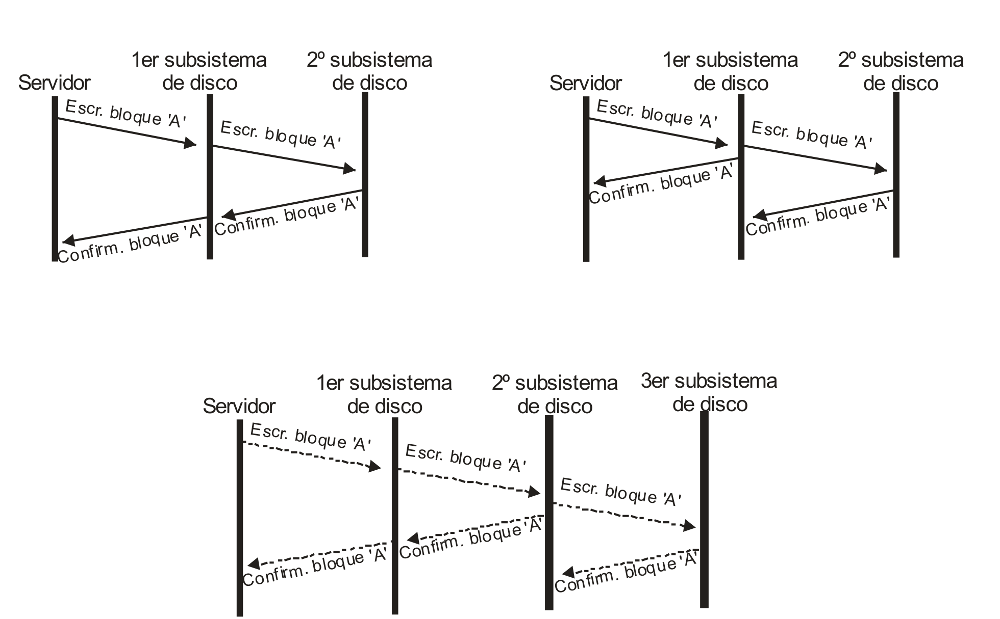
Arriba izquierda, síncrona: la confirmación al servidor llega después de que el segundo subsistema confirme. Arriba derecha, asíncrona: el servidor recibe la confirmación antes de que el bloque llegue al segundo subsistema. Abajo: síncrona al segundo y asíncrona al tercero.Analogía: el correo certificado
La copia síncrona es enviar una carta certificada y no seguir hasta recibir el acuse de recibo: lento, pero seguro. La asíncrona es echar la carta al buzón y seguir con lo tuyo: rápido, pero si el cartero la pierde, no te enteras.
Para entenderlo mejor
Understand the differences in Async and Sync technologies — la replicación síncrona y asíncrona comparadas para proteger datos y servicios (vídeo, 4:50, inglés).
5.2.3 Grupos de consistencia en bases de datos
Un grupo de consistencia es un grupo de LUNs (discos lógicos, posiblemente de servidores distintos: Unix, mainframe, Windows) en el que se garantiza que las operaciones de E/S se replican en orden estricto. Es indispensable para las bases de datos: si el registro de transacciones y los datos se copiaran desordenados, la copia en el CPD de reserva sería inconsistente e inútil.
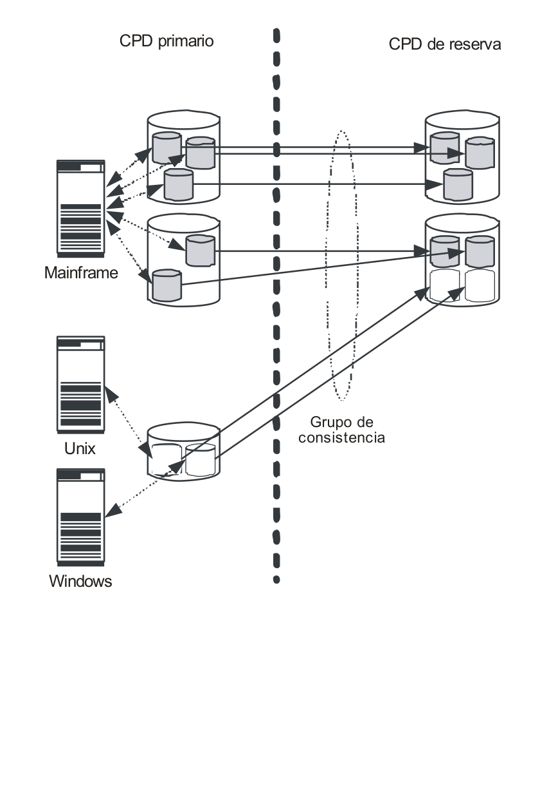
5.2.4 Enmascarado por LUN
Sin control, todos los servidores verían todos los discos del subsistema, y uno podría sobrescribir los datos de otro. El enmascarado por LUN (LUN masking) hace que cada servidor solo vea los LUNs que tiene asignados: los demás le quedan ocultos. Los discos se identifican con la notación c_t_d_s: ID del controlador SCSI, ID del disco (target), LUN y partición (slice).
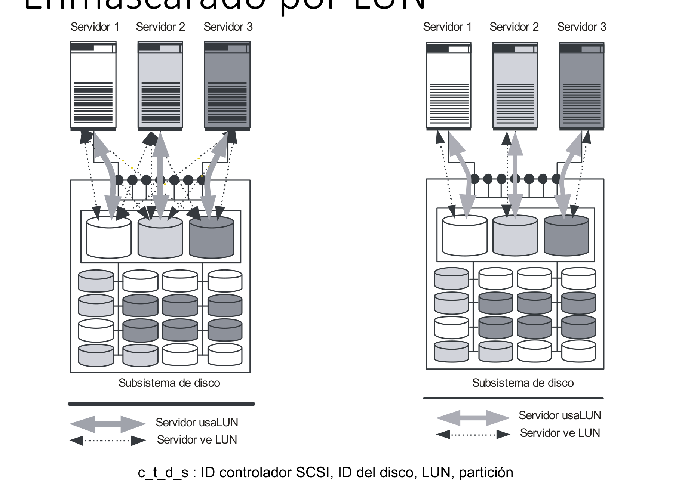
Izquierda, sin enmascarado: cada servidor usa sus LUN pero ve todos (flechas discontinuas). Derecha, con enmascarado: cada servidor solo ve los LUN que usa.Para entenderlo mejor
Zoning and LUN Masking in SAN Fabrics (Cisco) — para qué sirve el enmascarado por LUN y cómo se combina con el zoning de la red (vídeo, 4:40, inglés).
5.3 Conseguir alta disponibilidad
Para que un subsistema de disco no sea un punto único de fallo:
- Usar RAID.
- Que el controlador monitorice los discos (comandos SCSI o SMART).
- Usar canales redundantes para todos los discos y controladores redundantes.
- Duplicar fuentes de alimentación, baterías, ventiladores, etc., y monitorizarlos.
- Hacer copias instantáneas para protegerse de errores humanos y de software (contra los que el RAID no sirve: si borras un fichero, el RAID borra también la copia).
- Hacer mirroring remoto.
- Implementar enmascarado por LUN.
5.4 All-Flash Arrays (AFAs)
Un AFA, también llamado sistema de almacenamiento de estado sólido o array de estado sólido, es un array de almacenamiento externo que usa únicamente memoria Flash para el almacenamiento persistente. Los principales proveedores son Pure Storage, EMC, HDS, IBM, HP y NetApp. Existen también arrays híbridos, que combinan SSD y HDD en el mismo chasis.
Están diseñados específicamente para Flash e incorporan funciones de almacenamiento definidas por software para gestionar los datos: clonado de discos, RAID, compresión, deduplicación (guardar una sola vez los bloques repetidos) y copias instantáneas.
5.5 Ideas clave
- Subsistema de disco = puertos + caché + controlador + muchos discos; da discos (bloques) a los servidores, no ficheros (≠ servidor de ficheros). Transparente: discos lógicos, RAID, virtualización.
- Mejor discos grandes (dejan bahías libres para crecer). Canales redundantes: activo, activo/pasivo, activo/activo sin o con balanceo. RAID con disco de reserva (hot spare) y reconstrucción en caliente.
- SSdD inteligentes (JBOD → RAID → inteligente): copias instantáneas (naïve, desconectar espejo, en marcha: total, parcial, incremental), mirroring remoto (síncrono: sin pérdida, lento; asíncrono: rápido, puede perder lo último; combinaciones), grupos de consistencia (orden estricto para BD) y enmascarado por LUN (cada servidor ve solo sus LUN; notación c_t_d_s).
- Alta disponibilidad: RAID, monitorización, canales y controladores redundantes, componentes duplicados, snapshots, mirroring remoto, LUN masking.
- All-Flash Arrays: solo Flash, con clonado, RAID, compresión, deduplicación y snapshots; híbridos con HDD.